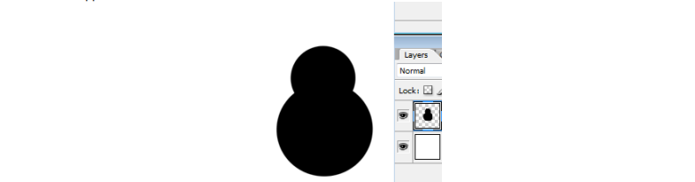
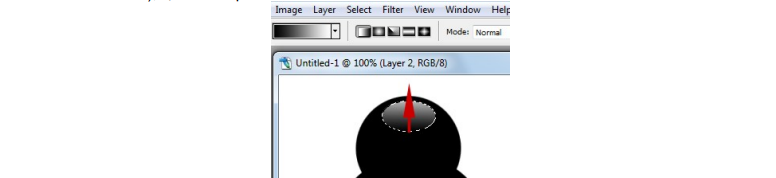
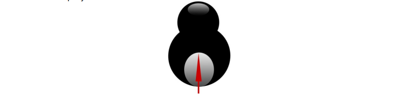
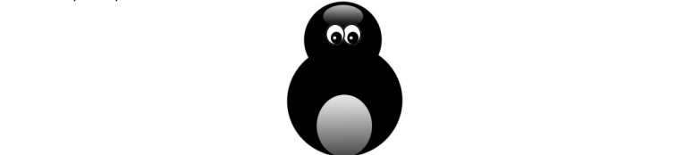
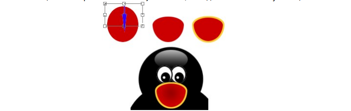
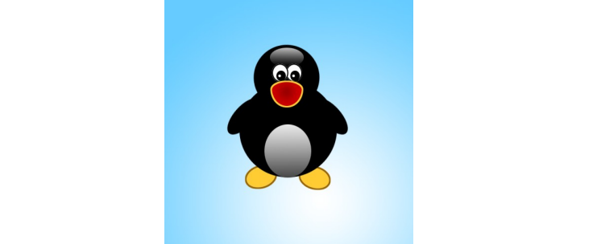

Самостоятельная работа
Рисование пингвина.
1. Новый документ 500х500 пикселов.
2. Новый слой. С помощью эллиптического выделения (использовать кнопку параметров “Добавить к выделению”) и инструмента заливки нарисовать туловище пингвина. Снять выделение.
3. Рисуем лоб. Эллиптическое выделение залить градиентом (инструмент в группе с заливкой), цвета - черный и белый.
4. Так же рисуем живот:
5. Рисуем глаза на новом слое (эллиптическая область выделения, заливка, обводка выделенной области, инструмент перемещения). Продублировать слой с глазом командой Layer - DuplicateLayer (Слой - Продублировать слой). Объединить все слои кроме фона.
6. Рот. Новый слой. Рисуем красный овал. Прямоугольным выделением выделяем верхнюю половину овала. Edit - Transform - Scale (Редактирование - Трансформация - Масштабирование). Деформируем за верхний средний квадратик (тянем вниз), подтвердить трансформацию - галочка на панели параметров. Выполнить обводку желтым цветом. Перенести на голову пингвина, объединить со слоем туловища.
7. Лапы и крылья. Новый слой ниже слоя с туловищем. На новом слое - овальное выделение, залить желтым или черным. Трансформировать поворотом: Edit - Transform - Rotate. Продублировать слои, развернуть по горизонтали: Edit - Transform - Flip Horisontal, придвинуть к туловищу, объединить слои, кроме фона.
8. Прорисовываем фон радиальным градиентом. Сохраняем в gif - формате.
